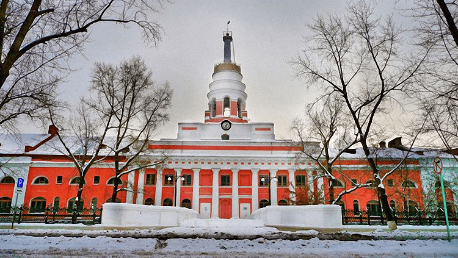
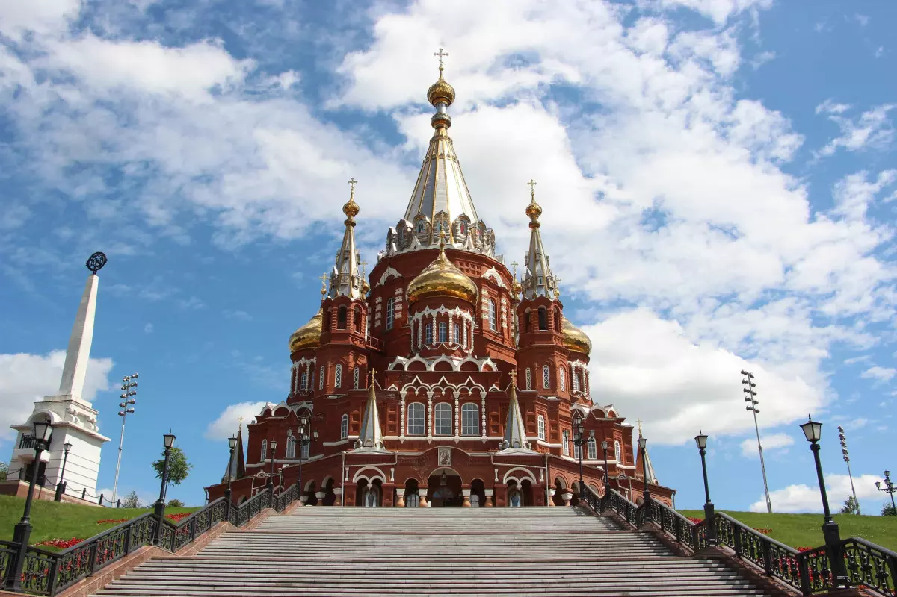
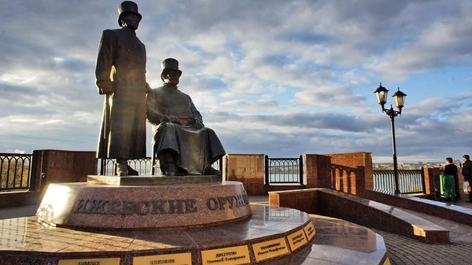
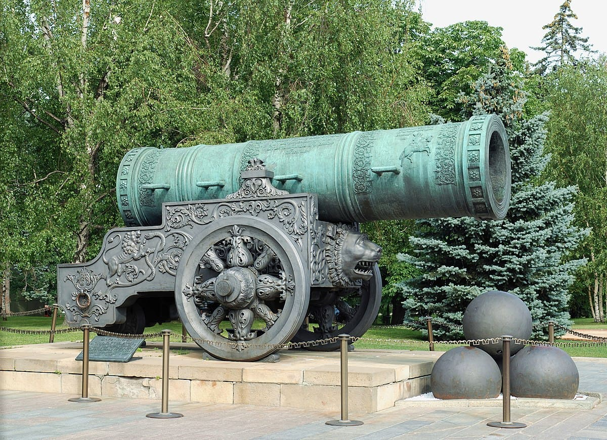
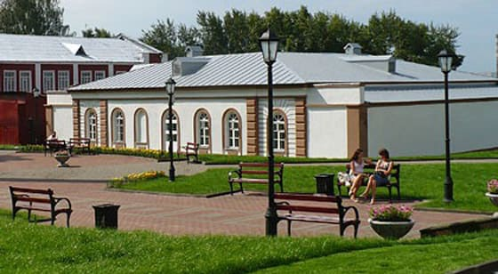
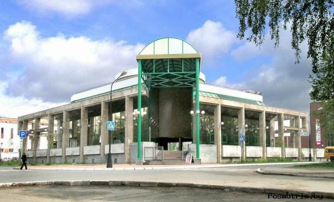

Подробнее
Так как завод был построен в низкой болотистой местности, на берегу Ижевского пруда, особое внимание было уделено устройству и укреплению фундаментов. На четырёхэтажное здание пошло 8 миллионов кирпичей. Внутреннее устройство — восемь больших сводчатых залов. Длина здания 350 метров. В центральной части здания расположена колоннада из 10 полукруглых пилястр, которая поддерживает антаблемент и двухъярусный аттик, служащий подножием башни (общая высота 50 или 51 метр), состоящей из трёх объёмов и завершающейся высоким шпилем в виде дорической колонны — традиционный башенный шпиль заменён триумфальной колонной с бронзовым двуглавым орлом, который попирал трофейные пушки и латы и французских одноглавых орлов (как символ недавней победы в Отечественной войне 1812 года), но в 1919 году орёл был сброшен и утоплен в пруду. В нижнем, более массивном ярусе башни прорезаны высокие проёмы-звоны, в которых помещается набор из десяти колоколов заводских часов-курантов (авторства мастера Шнотца с помощником Р. Глушковым). Общее состояние памятника неудовлетворительное, отклонение верха колонны от вертикали составляет более метра.
Подробнее
Михайловский собор — кафедральный собор Ижевской епархии Русской православной церкви, расположенный в Ижевске. Находится на одной из самых высоких точек города, на Красной (Михайловской) площади. Высота собора 67 м. Настоятель — правящий (епархиальный) архиерей Ижевской епархии. По состоянию на 2021 год это Викторин (Костенков), митрополит Ижевский и Удмуртский. Заместитель настоятеля — протоиерей Роман Воскресенских
Подробнее
Композиционно монумент представляет собой две фигуры в кафтанах с золотым позументом и цилиндрах. Выбор одежды фигур сделан не случайно, царские кафтаны шили по специальному заказу и жаловали лучшим мастерам. К нему обязательно полагались трость, цилиндр и перчатки. Скульптор постарался передать дух того времени используя прием патинирования. Бронзовый памятник уже сейчас выглядит будто тронутый временем. На гранитных пилонах выбиты имена самых знаменитых за два века мастеров предприятий - М.Т. Калашникова, Г.Н. Никонова, В.А. Ярыгина, Е.Ф. Драгунова, И.Ф. Белобородова, В.П. Ионова, Н.И. Палладина, а также названия двух самых известных производителей стрелкового оружия - Ижевского машиностроительного и механического заводов.
Подробнее
Ижевск славится огромным количеством интересных достопримечательностей, главной из которых является величественная Царь-Пушка, украшающая городскую набережную. Этот шедевр литейного искусства был изготовлен на заводе «Ижсталь» в 2001 году с разрешения исторического музея Московского Кремля и является точной копией столичной красавицы. Царь-пушка состоит из 24 элементов, которые украшают ствол орудия. На ней можно увидеть голову льва, изображение царя Федора на коне, а перед ней уложены декоративные чугунные ядра. Чугунная пушка считается одним из главных украшений Ижевска и изображает на многих сувенирах. Она является излюбленным объектом для фотографий туристов, а также местом фотосессий молодоженов.
Подробнее
Подробнее
Музей занимает старейший дом города рядом с заводом. Хотя словосочетание «заводской музей» вызывает обычно скуку, здесь все не так, ведь на Ижмаше делают оружие и мотоциклы. В музее можно увидеть слиток кричного железа XVIII века, старинные опытные макеты станков, всякие ружья, винтовки, пулеметы и автопушки XIX–XX веков (включая знаменитые ППШ и АКМ), коллекцию мотоциклов (в том числе подлинник Иж-1 опытного образца 1928 года).
Подробнее
В музейно-выставочном комплексе представлено всё стрелковое оружие за двухсотлетнюю историю Ижевска, начиная с пехотного кремниевого ружья до современного автомата «Абакан» АН-94. Рядом с экспонатами стоят манекены одетые в форму того времени. В красном углу красуется автомат известный в любой точки планеты – АК.
Мы представители крупного промышленного, торгового, научно-образовательного и культурного центра Поволжья и Предуралья, столицы Удмуртской Республики г. Ижевска. Мы живем в этом городе уже 17 лет и нам точно есть, что рассказать! Все места, которые рекомендовано посетить, были уже хорошо изучены нами. Именно поэтому это одни из лучших туристических мест, которые мы рекомендуем.